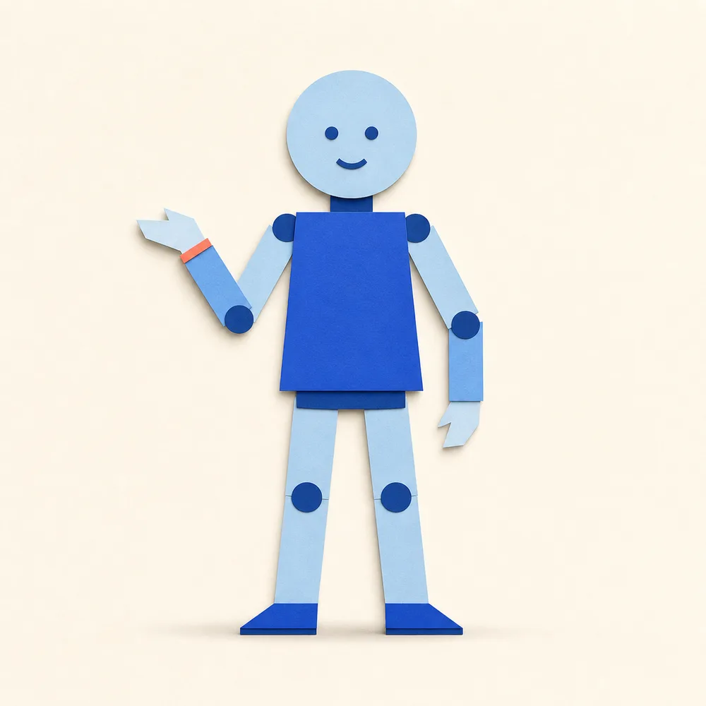
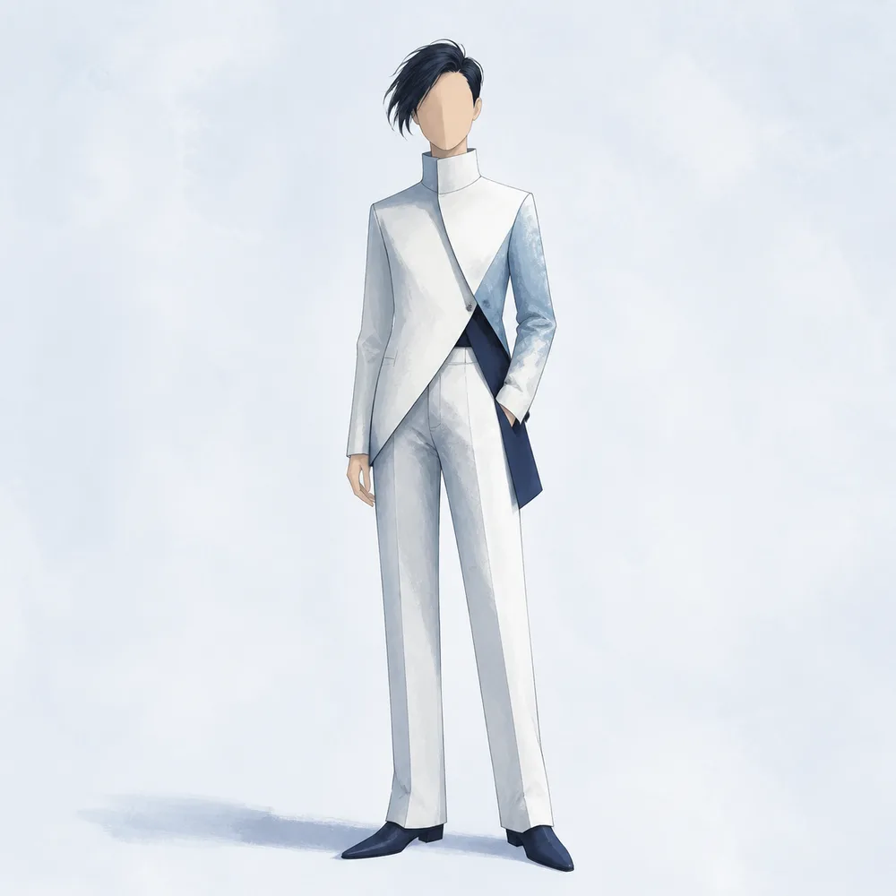
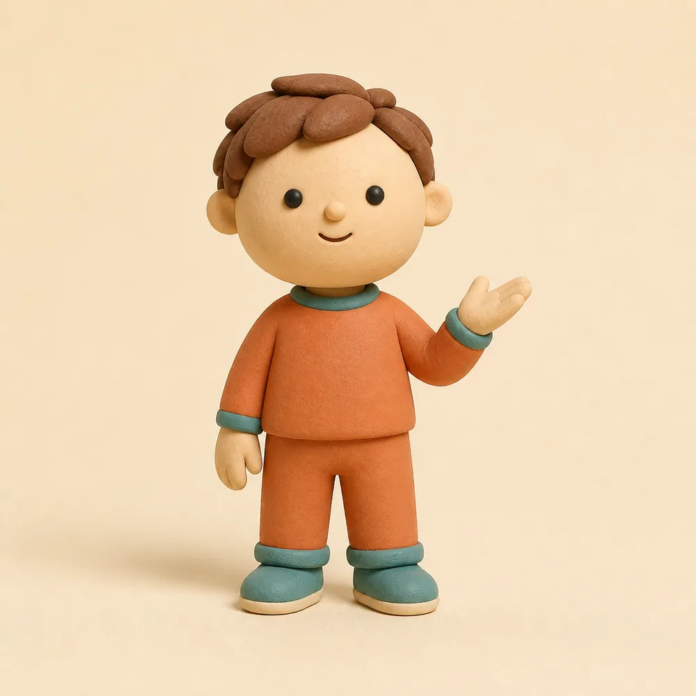
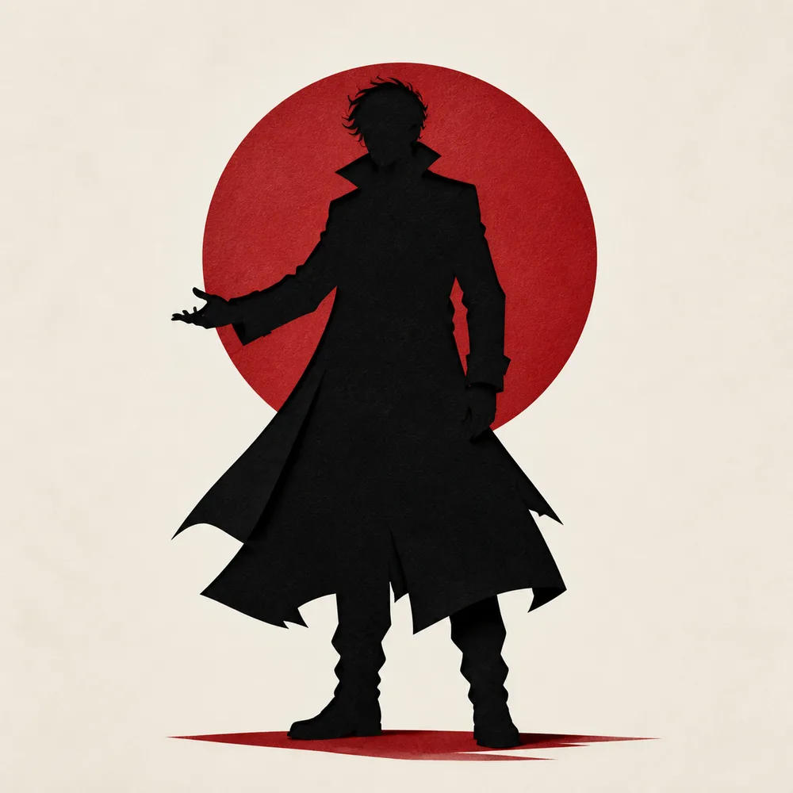
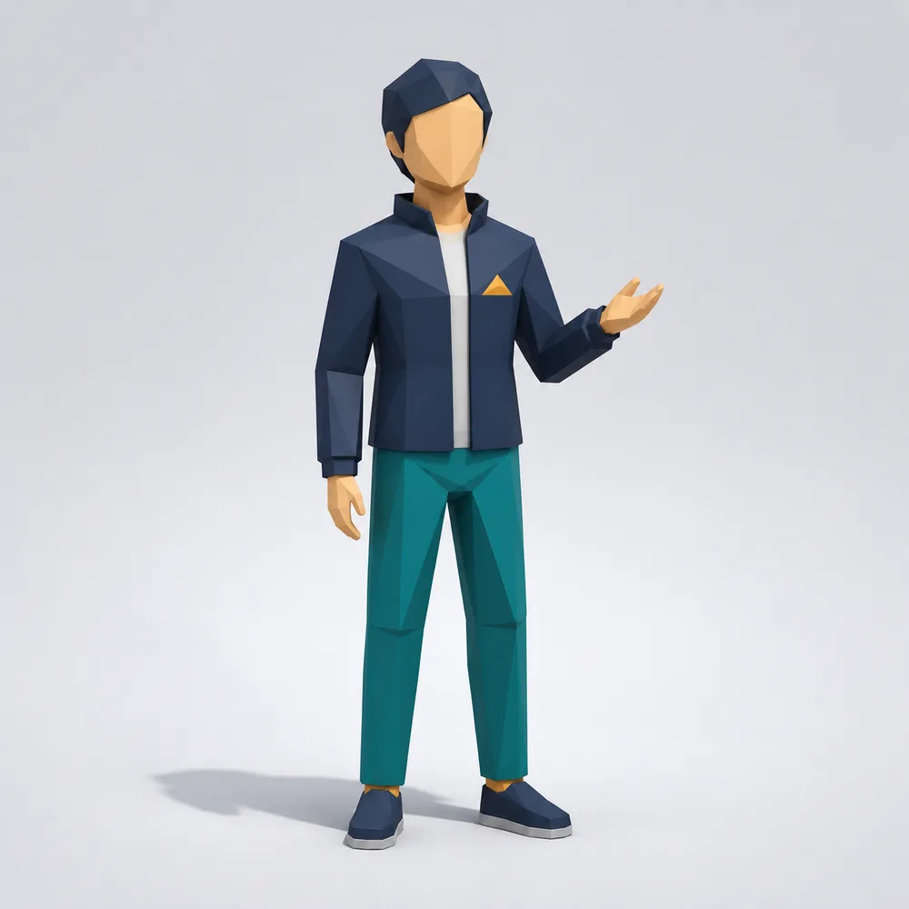
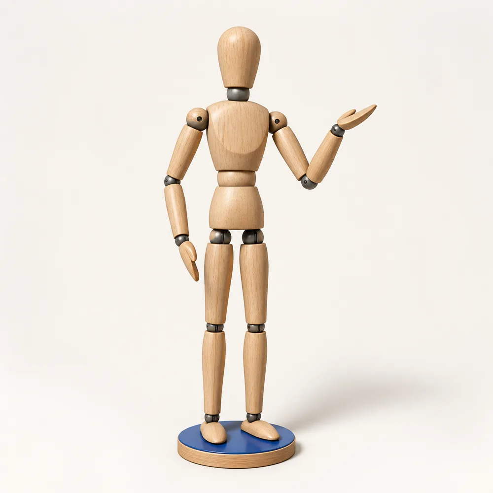
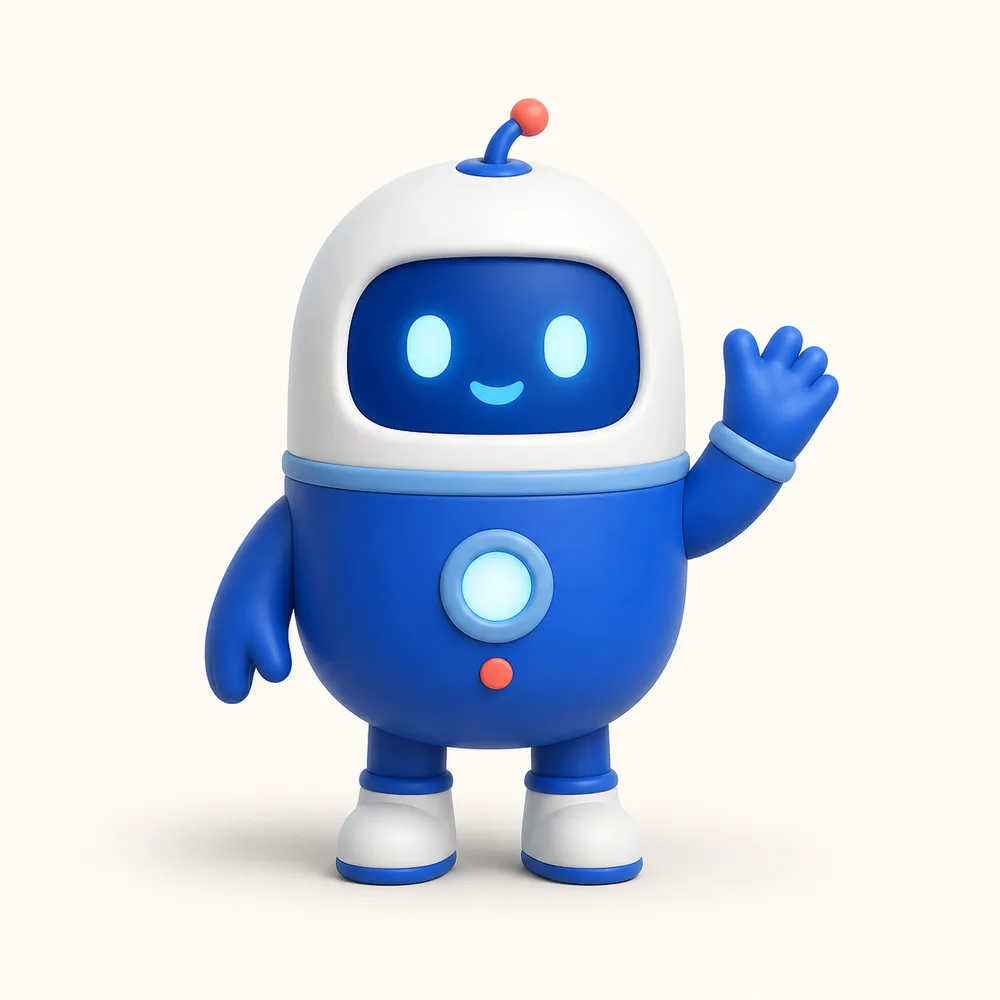

导演控制层
输入门禁、叙事路由、六幕结构、画幅重构、连续性桥接、提示词锁定与修改确认。
01 / JUDGMENT
一句话判断
最值得我们拿走的是“内容中间层”：先把想法变成可以确认的叙事与分镜，再把同一份导演意图编译成目标视频模型能执行的生产包。
输入门禁、叙事路由、六幕结构、画幅重构、连续性桥接、提示词锁定与修改确认。
没有视频模型、API 调用、任务队列、自动重试、自动剪辑、视觉评分或跨模型一致性保证。
02 / UPSTREAM EVIDENCE
先看上游真实演示
UPSTREAM OFFICIAL ASSET 下方两段 MP4 来自上游仓库 `assets/readme/`，作为能力外观证据原样保留；不是 Project 008 生成结果，也不代表稳定成功率。
视频加载失败，但研究内容仍可继续阅读。请通过上方“原始仓库”查看演示素材。
纯白平面画布、黑色人物与有限强调色；约束重点是禁止灰底、纹理、阴影和不必要的三维深度。
视频加载失败，但研究内容仍可继续阅读。请通过上方“原始仓库”查看演示素材。
纯黑背景、白色人物与高饱和强调色；适合用线团、道路、冲击波等图形隐喻制造强反差。
03 / OUR FIRST REAL RUN
我们的真实生成样例
USER-GENERATED EXTERNAL MODEL OUTPUT 这条 MP4 是用户在外部视频模型中生成后提供的实测结果，不是上游官方资产，也不是网页模拟。生成后端、模型版本和原始调用记录尚未保存，因此只陈述文件与画面能够证明的事实。
用户实测视频加载失败；文件审计、镜头映射和必要理解仍可继续阅读。
负责把内容变成旁白、六幕分镜、节拍和连续性，不提供新的视频模型。
用简单人物、颜色、图形和运动隐喻表达抽象内容，可以被我们的风格包替换。
六幕预案先确认“讲什么、怎么衔接”，不是直接复制到模型的一条总 Prompt。
通常逐镜头复制给外部模型；模型也可能像本次实测一样输出覆盖两幕的较长结果。
生成、重做、旁白核验、BGM 统一、剪切和拼接都不在这个仓库里自动完成。
04 / CHARACTER STYLE EXPANSION
暂时不生成视频，先验证形象语言
PROJECT 008 · GENERATED IMAGE EXPLORATION 下方八张图片是本轮为形象比较直接生成的静态样张。统一使用单角色、全身、中性背景；它们能展示视觉方向，不能证明视频动作、跨镜头一致性或生成成功率。

保留火柴人的简单关节和清晰动作，但增加颜色、层次与品牌感，是迁移成本最低的一类。

用发型、服装轮廓和修长比例代替五官识别，画面更高级，适合建立成熟的品牌审美。

圆润比例和手工材质能容纳轻微形变，人物有温度，又不会像写实角色那样依赖精确表情。
纤维、缝线和豆豆眼形成鲜明记忆点，适合柔和、治愈和陪伴感内容，也容易发展成小型 IP。

以完整轮廓和有限强调色承担情绪，仍然保持很低的细节成本，比火柴人更有海报与电影感。

简化面部但保留三维体积，适合需要空间、转身和镜头角度变化的科技或流程内容。

关节本身就是动作语言，最适合把导演预案先变成姿态和运动设计，也能作为后续精细角色的预演层。

固定几何轮廓、颜色和表情系统，既能承担解释角色，也能持续积累为产品助手或内容账号 IP。
它们分别覆盖“最低迁移成本、最高轮廓稳定、最高亲和力、最高长期 IP 价值”。本轮只确认形象方向，下一阶段才用同一幕动作做视频一致性 A/B。
查看图片清单与生成规格 JSON ↗05 / REPRESENTATIVE CASES
操作导演编译台
DETERMINISTIC RESEARCH SIMULATION 励志案例压缩自上游完整示例；科普与商业案例使用上游测试公布的输入，由 Project 008 按公开合同构造。这里不调用 LLM 或视频模型。
FIRST FRAME
→FINAL FRAME
LOCKED Phase B 只在当前 Phase A 获得明确批准后生成。 切换案例、画幅或主题都会使批准失效。
NO MODEL CALL · NO VIDEO RENDER
06 / STYLE ADAPTER LAB
把导演内核接到我们的风格
PROJECT 008 ADAPTER PROTOTYPE 这是结构与状态机的确定性研究原型，不是三套风格的真实生成结果，也不公开或替代任何私有固定配方。它验证的是“什么保持、什么替换、何时重新批准”。
风格合同依赖已经批准的 Phase A；导演结构不会被这里的选择覆盖。
WAITING FOR DIRECTOR APPROVAL · 先在上方批准导演预案，风格适配器才会绑定到对应导演版本。
NO STYLE GENERATION · NO MODEL CALL
每个单元比较“直接单 Prompt”与“获批导演 Manifest + 风格适配器”；模型、时长、画幅、参考资产额度与生成预算必须一致。
执行前待定：目标视频后端与版本、预算上限、三套获准参考资产、叙事/风格/剪辑审核人。未确定这些条件前，本项目不消耗生成额度，也不宣称三套风格的真实视频效果。
07 / CAPABILITIES
它把什么变得可控
把素材压缩或扩展为 130–150 词英文旁白，按励志、教育或商业模式建立钩子、递进和结尾回扣。
固定六个约十秒场景，每幕包含三个时间节拍、至少四种相关视觉设备，并要求每两到三秒发生变化。
横屏使用左右调度，竖屏使用前后纵深与层叠揭示，方形使用紧凑中心构图；改变画幅必须重新设计。
把上一幕的姿势、物体、运动方向、满屏形状或镜头运动作为下一幕第一帧的继承状态。
每条 Prompt 重复画幅、主题、人物、配色、声音、台词、转场和负面约束，降低独立生成时的上下文丢失。
用户先批准导演预案。主题、画幅、旁白、场景结构或全局风格变化都会退回 Phase A 再次确认。
08 / HOW IT WORKS
工作原理
仓库核心不是程序运行时，而是 Agent 在上下文中执行的声明式合同。`SKILL.md` 管流程，两个 references 分别定义导演预案和生产 Prompt，测试目录描述门禁与期望行为。
收集必要输入，决定何时停下、何时重构、何时加载下一阶段规则。
把自然语言内容转换成可以人工审阅的旁白、六幕分镜、视觉节拍和连续性状态。
把获批的每幕编译成独立提示词，并重复关键锁定条件与负面约束。
检查 Agent 是否遵守输入门、批准门和重构规则；不检查真实视频画质或模型稳定性。
09 / USE CASES
使用场景
10 / EXTENSION ROADMAP
从样例 Skill 到生产系统
最高价值的扩展不是继续堆叠描述词，而是把导演预案变成结构化中间层，让风格、模型、音频、生成、重试和质检都成为可替换模块。
用 JSON Schema 固定旁白、镜头、首尾状态、视觉锁、音频、版本和证据来源，代替只面向人阅读的 Markdown。
把火柴人替换成独立 style pack：人物规则、线条/材质、色彩语义、镜头语言、允许项和禁止项由我们的风格库提供。
同一导演 Manifest 分别编译到不同视频模型，按各自时长、参考图、首尾帧、音频和负面词能力生成适配包。
接入任务队列、额度预算、失败重试、素材下载、TTS、连续 BGM、音效、字幕后期和 FFmpeg 合成。
保存角色设定、关键帧、声音参考和镜头状态；检测人物漂移、意外文字、旁白缺失、时长和首尾匹配。
记录模型版本、Prompt、成本、失败原因和最终采用状态，并自动导出 Shorts、Reels、横屏与方形平台包。
11 / VALUE TO US
对我们的参考与后期价值
它证明了一套视觉经验可以从“写提示词”升级为可确认、可重构、可测试的生产合同。这与我们的固定风格 Skill、个人 IP、视频与交互内容方向高度兼容。
借鉴薄入口、按阶段加载 references、显式批准门、独立生产包、失败约束和行为评测。
保留内容与镜头编排，替换火柴人角色、视觉配方、配色、镜头审美与目标模型。
当接入真实模型与合成管线后，它可以成为选题到成片之间的可版本化中间层和人工审核界面。
建议先以它作为导演工作流 benchmark，选择两到三套我们的固定风格完成同题 A/B；只有真实回归证明采用率、连续性或重做成本改善，再建设多模型执行层。
12 / EXECUTIVE SUMMARY
项目必要总结
FINAL PROJECT SNAPSHOT 这里不增加新的能力声明，只把前面已经验证的事实、限制和采用判断压缩成一份可直接用于决策的摘要。
它是把想法编译成六幕分镜和独立镜头 Prompt 的导演控制层，不是视频模型。
可确认的旁白、镜头职责、三个节拍、首尾状态、音频建议和逐镜头生产合同。
明暗火柴人方向可实现；用户实测覆盖前两幕；导演、风格和批准状态可以结构化。
跨镜头身份一致性、批量成功率、生成成本、自动重试和规模化成片能力。
知识解释、教育、励志心理、抽象概念和生成前的团队分镜确认。
可以成为固定风格、品牌角色和不同视频模型之前的可审核导演中间层。
架构参考价值高，直接成片价值中等，底层模型能力新增为零。
保留六幕、批准门、首尾状态和独立镜头合同。
比较可用率、重做、连续性、成本与耗时。
再建设 Manifest、多模型编译、队列、QA 与合成。
13 / EVIDENCE & BOUNDARIES
成熟度与证据边界